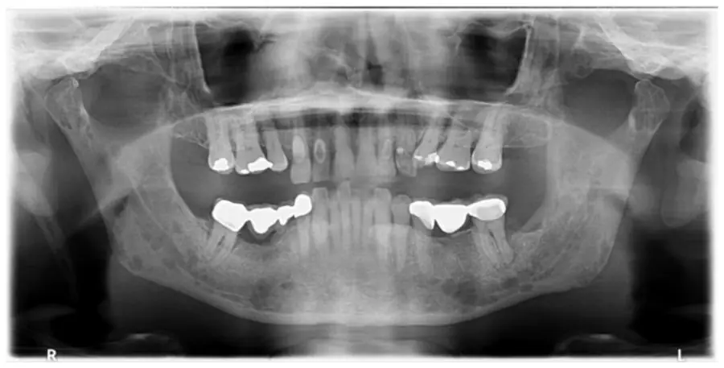

نسخه استخراجشده؛ ترجمه یا تأیید علمی انجام نشده است. وضعیت: captured
هر دو نئوپلاسم بدخیم سلولهای برخاسته از پلاسماسلاند؛ ضایعهی منفرد پلاسماسیتوما و ضایعات متعدد مولتیپل میلوما نامیده میشوند. منشأ ژنتیکی: حذف نسبی کروموزوم ۱۳ و نیز جابهجاییهای کروموزومی.

و یک جایگاه که باید بدانی: «مولتیپل میلوما، بهویژه، شایعترین بدخیمی برخاسته در استخوان است.» بیشتر بیماران مرد، بین ۳۵ تا ۷۰ سال با میانگین ۶۰ سال. شکایت شاخص در شروع: کمردرد پایین.
و نشانهی آزمایشگاهی مشهورش: «در نیمی از بیماران، پروتئین مشخصهی بنس-جونز در ادرار قابل تشخیص است، که باعث کف کردن ادرار میشود.» و نشانههای سیستمیک ثانویه: آنمی، آمیلوئیدوز و هیپرکلسمی.
و در فک: مرزهای کانال مندیبولار کورتکس خود را از دست میدهند؛ ضایعات مندیبل میتوانند «گاز بیسکویت» یا اسکالوپ سطح داخلی اندوستئال کورتکس بسازند. واکنش پریوستئال غیرمعمول است و اگر باشد، یک خط اوپک منفرد موازی سطح استخوان. و دندانها روی زمینهی استخوان استئوپنیک برجسته میشوند، و لامینا دورا و کورتکس فولیکولها «به شیوهای مشابه هایپرپاراتیروئیدیسم» از دست میروند. بهندرت تحلیل نامنظم ریشه.
و چهار افتراق میلوما — هر کدام با جداکنندهاش: متاستاز (سابقهی بدخیمی قبلی کمک میکند؛ و مرز میلوما بهتر تعریفشده است)، استئومیلیت (معمولاً علت قابل رؤیتی برای پاسخ التهابی هست، و التهاب منطقهی گذار پهن از اسکلروز دارد که در میلوما نیست)، حفرهی سادهی استخوانی (کورتیکهی ظریف، اسکالوپ میان ریشهها، سن جوانتر، و مهمتر: PDL و لامینا دورا حفظ میشوند)، و هایپرپاراتیروئیدیسم (با شیمی خون رد میشود، ولی تومورهای قهوهای میتوانند بهراحتی با میلوما اشتباه شوند).
لنفومها نئوپلاسمهای بدخیم لنفوسیتها در سطوح گوناگون بلوغاند. لنفوم هوچکین با شناسایی سلول رید-اشترنبرگ در بافتشناسی تعریف میشود؛ غیرهوچکین خانوادهای ناهمگون است. و نکتهی مهم: تفکیک این دو روی تصویر ممکن نیست.
محل — با یک منطق آناتومیک زیبا: لنفوم خارجگرهی بیشتر ماگزیلا و سینوس ماگزیلاری را درگیر میکند. و در مندیبل، ناحیهی خلفی شایعتر است، «با ورود سلولهای بدخیم به استخوان از راه کانال آلوئولار تحتانی».
و دو ویژگی رفتاری شاخص لنفوم: «وقتی استخوان درگیر شود، لنفومهای غیرهوچکین در آغاز شکل و فرم استخوان میزبان را میگیرند»، و «لنفوم تمایل دارد در امتداد صفحات چربی و روی سطح استخوان رشد کند». ساختار داخلی تقریباً همیشه کاملاً رادیولوسنت است و «دیدن اوپسیتهی داخلی یا استخوان واکنشی در محیط، نادر است».
و اثر بر دندان: لنفوم تمایل دارد به فضای PDL دندانهای رویشیافته رشد کند؛ و در دندانهای در حال تکامل، کورتکس کریپت از بین میرود و تاج دندان میتواند به سمت اکلوزال جابهجا و از فولیکول خود خارج شود. و دو ضایعهی دیگر هم همین جابهجایی اکلوزالی را میسازند: لوسمی و هیستیوسیتوز سلول لانگرهانس.
و لنفوم برکیت — لنفوم سلول B با درجهی بالا. فرم آفریقایی اندمیک با عفونت پیشین مالاریا و ویروس اپشتین–بار پیوند خورده و کودکان خردسال را درگیر میکند؛ فرم غیرآفریقایی نوجوانان و بزرگسالان جوان را و بهندرت فکها را درگیر میکند. سازوکار: جابهجایی کروموزوم ۸ که انکوژن Myc را درگیر میکند.
و مشخصهی بالینی برکیت، عددی است که فراموش نمیشود: «زمان دوبرابر شدن نئوپلاسم کمتر از ۲۴ ساعت است.» به همین دلیل «بدشکلی صورت میتواند بسیار زود در سیر بیماری پدید بیاید»، مجاری بینی را مسدود کند، محتویات اوربیت را جابهجا کند و از راه پوست زخم شود.
لوسمی نئوپلاسم بدخیم سلولهای بنیادی خونساز است و «کل بدن را درگیر میکند، چون سلولهای بدخیم در گردشاند».
در فک: انفیلترای لوسمیک در فضاهای مغز استخوان گسترش مییابد و به از دست رفتن الگوی ترابکولار میانجامد. گاهی کانونهای سلول لوسمیک بیرون از فک، تودهای به نام کلروما میسازند که «مانند یک نئوپلاسم بدخیم منفرد و موضعی رفتار میکند».
و یک قاعدهی منفی مهم: «لوسمی اتساع استخوان ایجاد نمیکند» — هرچند گاهی یک لایهی منفرد استخوان نو پریوستئال دیده میشود، که در فرم مزمن غیرمعمول است. و دندانها روی زمینه برجسته میشوند، لامینا دورا و کورتکس فولیکولها از دست میروند، و دندانهای در حال رویش به سمت اکلوزال جابهجا میشوند که به از دست رفتن زودرس دندان میانجامد.
و نکتهای که ارزش بالینی مستقیم دارد: «پیدایش تغییرات رادیولوژیک میتواند نخستین نشانهی عود بیماری باشد.»
از تکثیر غیرطبیعی سلولهای شبهلانگرهانس یا پیشسازهایشان، در پی جهش پروتوانکوژن BRAFV600E — که پروتئین B-Raf را کد میکند و در کنترل تکثیر سلولی نقش دارد.
و سه شکل بالینی که باید بشناسی:
و امضای تصویریاش در فک — که باید از بیماری پریودنتال جدا کنی: «ضایعات زائدهی آلوئولار اپیسنتری در یکسوم میانی ریشهها دارند، و تخریب استخوان به شکل بیضی یا گرد پیش میرود تا زائدهی آلوئولار ظاهر «قاشقخورده» (scooped out) پیدا کند.» حاشیه از نسبتاً واضح تا واضح ولی بدون کورتیکاسیون، و گاهی پانچاوت با منطقهی گذار صفر.
و یک تمایز رفتاری ظریف: ضایعه استخوان دور دندان و لامینا دورا را تخریب میکند و دندانها شناور در فضا به نظر میرسند؛ ولی «این ضایعه دندانها را جابهجا نمیکند — هرچند دندانها ممکن است حرکت کنند چون از حمایت استخوانی محروم شدهاند». و برخلاف بسیاری از بدخیمیها، میتواند استخوانسازی نو پریوستئال را تحریک کند که از الگوی لایهای ضایعات التهابی قابل تفکیک نیست.
سؤالهای این مرور سختترند و بسیاری از آنها ضایعهای میدهند که خوشخیم به نظر میرسد و میپرسند کدام یافته باید تو را به سمت بدخیمی ببرد.